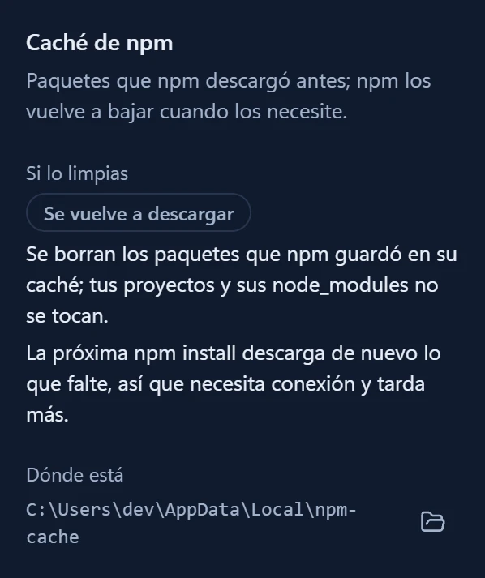
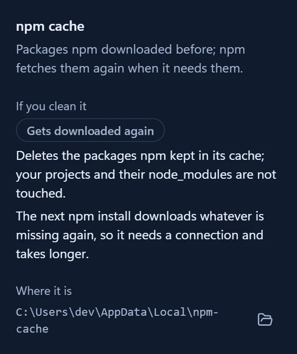
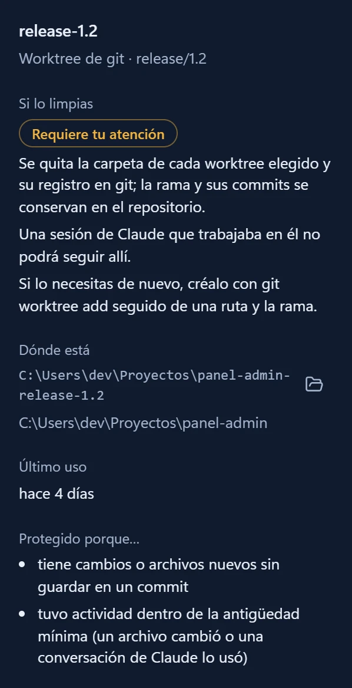
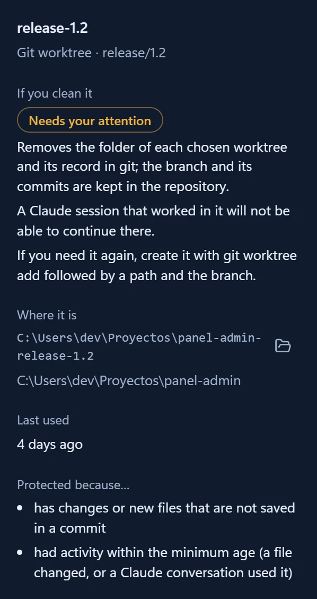

Recupera tu disco,
sin borrar a ciegas.Reclaim your disk,
without deleting blind.
Limpyrid es una app de escritorio para Windows que muestra qué ocupa tu disco y limpia, con cuidado, lo que dejan atrás las herramientas de desarrollo: cachés de npm, pip o cargo, carpetas que se regeneran, worktrees de git, datos de Docker y temporales de agentes de IA. Para quien programa y ve cómo se le llena el disco.Limpyrid is a Windows desktop app that shows what is using your disk and carefully cleans what developer tools leave behind: npm, pip or cargo caches, folders that rebuild themselves, git worktrees, Docker data and AI agent temp files. For developers whose disk keeps filling up.
Windows 10 y 11 · software libre, GPL-3.0-or-laterWindows 10 and 11 · free software, GPL-3.0-or-later · en desarrollo: todavía sin versión publicada · in development: no released version yet
Limpyrid en cinco figurasLimpyrid in five figures


Escaneas una unidad o una carpeta e Inicio dice cuánto queda libre y dónde está el espacio: por herramienta a la izquierda, por nivel de consecuencia en el centro. Escanear no borra nada.You scan a drive or a folder and Home tells you how much is free and where the space went: by tool on the left, by consequence level in the middle. Scanning deletes nothing.


Cuatro niveles, de menor a mayor consecuencia. Los dos primeros se marcan con una casilla; lo que hay que recompilar o requiere tu atención se revisa uno a uno. En el disco de ejemplo, hasta 116,8 GB.Four levels, from the mildest consequence to the most serious. The first two are ticked with one checkbox; what needs a rebuild or your attention is reviewed item by item. On the sample disk, up to 116.8 GB.


Cada fila responde qué es, qué pasa si la limpias y dónde está, antes de que marques nada.Every row tells you what it is, what happens if you clean it and where it lives, before you tick anything.


Un worktree con cambios sin commit, commits fuera de toda rama o uso reciente se muestra con su motivo, sin casilla. Windows, Program Files y tu carpeta de usuario están bloqueadas para cualquier acción.A worktree with uncommitted changes, commits outside any branch or recent use is shown with its reason and no checkbox. Windows, Program Files and your user folder are blocked for every action.


Nada se borra sin confirmación. La lista dice cada elemento, su tamaño y su ruta, y que el borrado es definitivo. Todas las garantíasNothing is deleted without confirmation. The list names every item, its size and its path, and says the deletion is permanent. Every safeguard
Las capturas son de la app en modo demostración, con datos de ejemplo. Lo que recuperes depende de lo que haya en tu equipo.The screenshots come from the app in demo mode, with sample data. What you recover depends on what is on your computer.
Lo que no es caché, también se ve.What isn’t a cache shows up too.
Carpetas y Mapa ordenan el disco entero por tamaño, para investigar lo que no entra en ninguna categoría. Desde ahí, lo que elijas va a la Papelera de reciclaje.Folders and Map sort the whole disk by size, so you can look into whatever fits no category. From there, what you pick goes to the Recycle Bin.


Una lista, de mayor a menor, con la parte que ocupa cada carpeta.A list, largest first, with the share each folder takes.


Las mismas carpetas como rectángulos, en proporción a lo que ocupan.The same folders as rectangles, in proportion to the space they take.
Sigue por aquí.Keep going.
ProductoProduct
Cómo funciona, qué herramientas reconoce, qué se niega a tocar y qué datos salen de tu equipo.How it works, which tools it knows, what it refuses to touch and which data leaves your computer.
DescargarDownload
Windows: instalador y portable, con sus sumas SHA-256.Windows: installer and portable, with their SHA-256 checksums.
Términos de usoTerms of use
Qué aceptas al limpiar, en lenguaje llano: el borrado es definitivo y tú decides qué se va.What you accept when you clean, in plain language: deletion is permanent and you decide what goes.